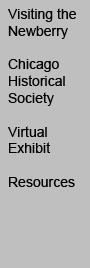

|

|
|
Public Programs: October
November | December | January
Outspoken Curators� Talk and Tour
Saturday, October 2, 9:30 am
Speakers: Tobias Higbie, The Newberry Library, and Peter Alter, The Chicago Historical Society
Meet the co-curators of Outspoken: Chicago's Free Speech Tradition, for a guided tour of the exhibit.
Admission is free. No reservations are required
Libraries and Free Speech
Saturday, October 2, 11:00 am
Speaker: Carol A. Brey-Casiano, American Library Association
The president of the American Library Association is a life-long advocate for books, literacy and libraries. As director of the El Paso, Texas Public Library, she is in the front lines of the free speech and privacy challenges faced by libraries open to the public. She will discuss the importance of intellectual freedom, the dangers of censorship, and the role of American libraries in a free society.
Admission is free. No reservations are required
Read-out: The American Library Association's 23rd Annual Banned Books Week
Saturday, October 2, 12:30 pm - 2:00 pm
Walk across Walton Street to Washington Square Park, Chicago's traditional outdoor free speech
forum, to hear readings from banned and "challenged" books presented by writers Sara Paretsky
and Richard Crowe, Jay Miller, former executive director of the American Civil Liberties Union of Illinois, and other supporters of intellectual freedom.
Admission is free. No reservations are required.
Gallery Walk
Saturday, October 9, 12:00 pm
Admission is free. No reservations are required.
The Social Protest Novel in Chicago, 1930-1960
Saturday, October 16, 9:30 am - 10:30 am
Speaker: Alan M. Wald, University of Michigan
In the three decades since the publication of his biography of James T. Farrell, Alan Wald has focused on the legacy of the American literary left. His path-breaking studies of the social and political history of left-wing writers in the period from the onset of the Depression to the height of the Cold War include The New York Intellectuals and Exiles from a Future Time. This talk will draw upon his new research on Chicago writers, which adds to our knowledge of such well-known novelists as Farrell, Willard Motley, and Nelson Algren, and draws attention to their less well-known contemporaries.
Admission is free. No reservations are required.
The Social Protest Novel Continued
Saturday, October 16, 11:00 am - Noon
Speakers: Stuart Dybek and Alexai Galaviz Budziszewski
Expanding on Chicago traditions of the "social novel" that date back to Theodore Dreiser and
Sherwood Anderson, two writers native to Pilsen read selections from their works about the working-class people of this diverse Chicago neighborhood and discuss the centrality of place for other literary traditions.
Admission is free. No reservations are required.
Discussion: Free Space, Free Speech
Sunday, October 17, 2:00 pm - 3:30 pm
Note location: Chicago Historical Society, 1601 N. Clark
Speakers: Donald Mitchell, Syracuse University, and Thomas Brejcha, Thomas More Society,
Pro-Life Law Center
Two speakers representing opposite ends of the political spectrum address the boundaries between
public protest and public order. Professor Donald Mitchell will discuss how courts uphold the
right of public protest, but relegate the protesters to locations distant from their intended audiences. Thomas Brejcha, President and Chief Counsel at Chicago�s Thomas More Society, Pro-Life Law Center, will talk about the impact of RICO (Racketeer Influenced and Corrupt Organizations Act) on political speech.
The program is free with admission to the Chicago Historical Society: $5 ($3 seniors and students; $1 children 12 and under). Chicago Historical Society members and Newberry Library Associates will be admitted free to the Historical Society and the program.
Reservations are recommended; for reservations call (312) 642-4600.
Politics, Censorship, and Satire
Saturday, October 23, 10:00 am - 11:30 am
Chair: Barbara Ransby, The Public Square, University of Illinois at Chicago
Panel: Comic artist Nicole Hollander, Teresa Prados-Torreira, Columbia College, and David
Mulcahey, The Baffler and In These Times
What would Sylvia say? From George Washington to George W. Bush, satirists have plagued
American presidents and other politicians with fine wit and scathing comments about the state of
the union, which is why satirists, even in this land of freedom, are sometimes censored. Join the Public Square and the Newberry for a program on the tradition of political satire and its current uses in portraying today�s political scene.
Teresa Prados-Torreira, a cultural history specialist, teaches a course at Columbia College on political cartoons and satire. Dave Mulcahey, managing editor of The Baffler, writes a biweekly humor column for In These Times. With Nicole Hollander, they will discuss politics, satire, and censorship.
This program is organized and presented by the Public Square. Nicole Hollander's books will be
available for purchase at the Newberry Library's A. C. McClurg Bookstore. A book signing will follow the program.
Admission is free. No reservations are required.
Cirque Du Politique and the Presidential Rogues Gallery
Saturday, October 23, 7:00 pm - 10:30 pm
Note Location: In These Times, 2040 N. Milwaukee Ave., Chicago
Performers: Schadenfreude and Billionaires for Bush
The 60 satirical presidential posters in the Presidential Rogues Gallery range from Lyndon B. Johnson to Geroge W. Bush and the six presidents in between. The evening also includes a performance at 8 p.m. by members of Schadenfreude, Chicago's very own irreverent social and political satire comedy troupe, while members of Billionaires for Bush will also interact with the crowd. The evening is co-sponsored by Punk Planet.Suggested donation is $5. For more information, call (773) 772-0100, ext. 243.
Outspoken, Indian Style:
The Untold Story of the American Indian Chicago Conference
Wednesday, October 27, 2:00 pm
Speaker: Daniel Cobb, Miami University, Ohio
The former assistant director of the D'Arcy McNickle Center for American Indian History tells the story behind the story of the American Indian Chicago Conference of 1961. This week-long gathering at the University of Chicago attracted hundreds of Indian people from across the country. It is considered a critical turning point on the road to Red Power. The Conference's "Declaration of Indian Purpose" is an important early statement advocating tribal self-determination. Beneath the simple story of Indian people speaking out in the name of democracy rests a more complicated tale of suspicion, rumor, intrigue, and rebellion, reminding us of the complexities involved in being outspoken in Cold War America.
Admission is free. No reservations are required.
|
|